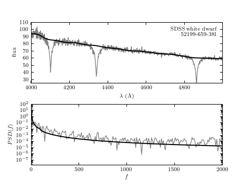

Example of Minimum Component Filtering¶
As explained in Wall & Jenkins, as well as Wall 1997, A&A 122:371

# Author: Jake VanderPlas <vanderplas@astro.washington.edu>
# License: BSD
# The figure produced by this code is published in the textbook
# "Statistics, Data Mining, and Machine Learning in Astronomy" (2013)
# For more information, see http://astroML.github.com
import numpy as np
from matplotlib import pyplot as plt
from astroML.fourier import PSD_continuous
from astroML.datasets import fetch_sdss_spectrum
from astroML.filters import min_component_filter
#------------------------------------------------------------
# Fetch the spectrum from SDSS database & pre-process
plate = 659
mjd = 52199
fiber = 381
data = fetch_sdss_spectrum(plate, mjd, fiber)
lam = data.wavelength()
spec = data.spectrum
# wavelengths are logorithmically spaced: we'll work in log(lam)
loglam = np.log10(lam)
flag = (lam > 4000) & (lam < 5000)
lam = lam[flag]
loglam = loglam[flag]
spec = spec[flag]
lam = lam[:-1]
loglam = loglam[:-1]
spec = spec[:-1]
#----------------------------------------------------------------------
# Mask-out significant features and compute filtered version
feature_mask = (((lam > 4080) & (lam < 4130)) |
((lam > 4315) & (lam < 4370)) |
((lam > 4830) & (lam < 4900)))
spec_filtered = min_component_filter(loglam, spec, feature_mask, fcut=100)
#------------------------------------------------------------
# Compute PSD of filtered and unfiltered versions
f, spec_filt_PSD = PSD_continuous(loglam, spec_filtered)
f, spec_PSD = PSD_continuous(loglam, spec)
#------------------------------------------------------------
# Plot the results
fig = plt.figure()
fig.subplots_adjust(hspace=0.25)
# Top panel: plot noisy and smoothed spectrum
ax = fig.add_subplot(211)
ax.plot(lam, spec, '-', c='gray', lw=1)
ax.plot(lam, spec_filtered, '-k')
ax.text(0.99, 0.95, "SDSS white dwarf\n %i-%i-%i" % (mjd, plate, fiber),
ha='right', va='top', transform=ax.transAxes, fontsize=12)
ax.set_ylim(25, 110)
ax.set_xlabel(r'$\lambda\ {\rm (\AA)}$')
ax.set_ylabel('flux')
# Bottom panel: plot noisy and smoothed PSD
ax = fig.add_subplot(212, yscale='log')
ax.plot(f, spec_PSD, '-', c='gray', lw=1)
ax.plot(f, spec_filt_PSD, '-k')
ax.set_xlabel(r'$f$')
ax.set_ylabel('$PSD(f)$')
ax.set_xlim(0, 2000)
plt.show()